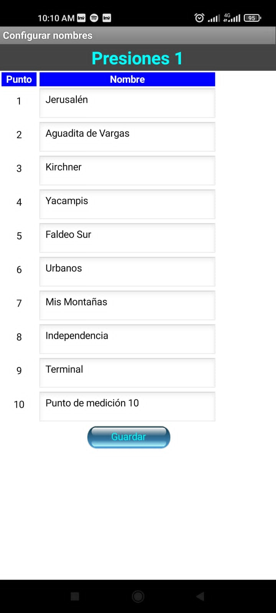
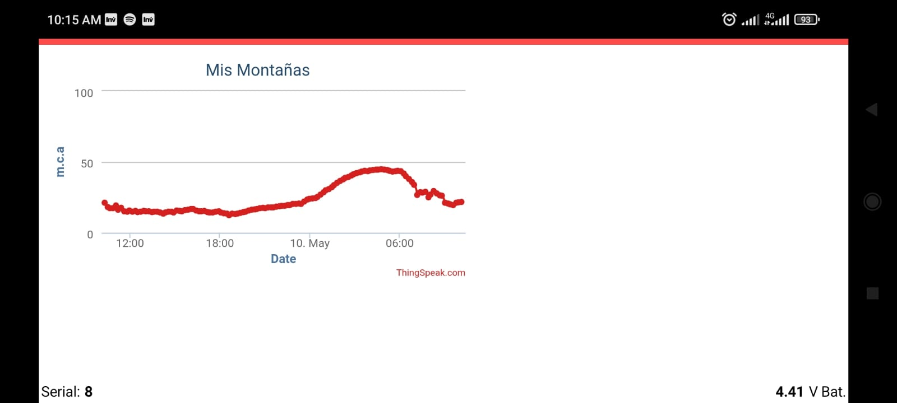
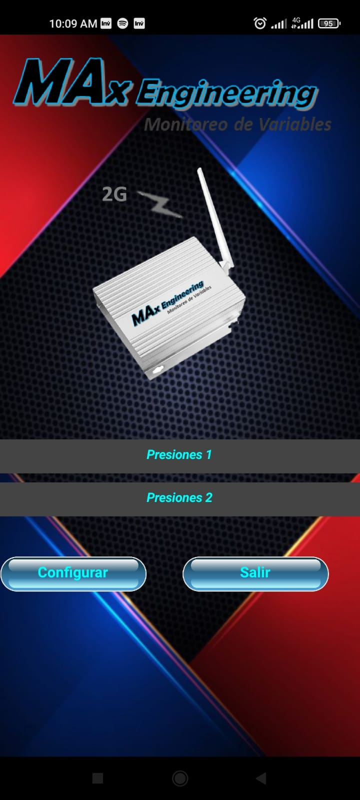

¿Quienes Somos?
Somos una empresa fundada en 2019, por Ingenieros con el deseo y la ambición de crecimiento profesional, centrada en la investigación y el desarrollo constante de nuevas tecnologías. Con el único propósito de servir en la cumplimentación de necesidades de control y supervisión de eventos al alcance de todos. Brindar asesoramiento y soluciones es un eslabón importante en la articulación con el cliente.
Productos
Entrando en la amplia gama de tecnologías de control y de supervisión se desprenden productos con tecnología móvil (GSM) y radiofrecuencia (RF). Entre ellos siempre latente la posibilidad de desarrollo orientado a cumplimentar las necesidades del cliente. La división de ingeniería brinda apoyo, logística y diseño de equipamiento de control electrónico o eléctrico.
Dispositivos con alimentación fotovoltaica y batería de ion-Litio para auto abastecimiento energético. Con alternativa de conexión a suministro monofásico 220VCA
Max Análog Sensors
Dispositivo Inalámbrico para monitoreo remoto mediante Tecnología GSM. El equipo toma mediciones de sensores analógicos en tiempo real de manera remota. Realiza transmisión de información por medio de señal telefónica GSM/GPRS. Puede ser enviada a equipos de telefonía convencional (SMS) o a un servidor web para el tratamiento de la información. MAx Análog Sensors está diseñado para sensores analógicos de 4-20 mA o 0-10v (a necesidad del cliente). Posee entradas Analógicas configurables a pedido para la adición de sensores.
Lectura de información en página web, asociados con gráficos de tendencias y lectura en tiempo real. Aplicación propia para Android desde Play Store, MAx Análog Sensors.

MAx Telemetry
Dispositivo Inalámbrico para monitoreo remoto mediante Tecnología Móvil GSM. El equipo alerta los estados que se desean monitorear en tiempo real y de manera remota realiza transmisión de información por medio de señal telefónica GSM/GPRS. Puede ser enviada a equipos de telefonía convencional (SMS) o a un servidor web para el tratamiento de la información. MAx Telemetry está diseñado para transmisión de estados. Cabe aclarar que cuenta con tres entradas digitales para tres eventos distintos de interés del cliente. Dispositivo con alimentación fotovoltaica y batería de ion-Litio para auto abastecimiento energético. Y la alternativa de conexión a suministro monofásico 220VCA. Lectura de información en página web, asociados con gráficos de tendencias y lectura en tiempo real. Controle los estados en cualquier lugar y en cualquier momento con aplicación propia para Android desde Play Store, Max Telemetry.

MAx Wireless
Dispositivo inalámbrico con comunicación por radiofrecuencia para control de eventos. El equipo actúa mediante eventos en entradas digitales o analógicas y se comunica de manera remota con su par. La transmisión se realiza por medio de ondas de radio en 433 MHz con antenas direccionales diseñadas para una comunicación estable y confiable.

Max Pressure
Dispositivo Inalámbrico para monitoreo remoto mediante Tecnología 2G. El equipo toma mediciones de presión en tiempo real de manera remota. Realiza transmisión de información por medio de señal telefónica GSM/GPRS. Puede ser enviada a equipos de telefonía convencional (SMS) o a un servidor web para el tratamiento de la información. MAx Pressure está configurado para medir presión de agua en un rango de 0 a 8 bar inclusive. Cabe aclarar que es necesaria solo una conexión hidráulica sencilla para realizar el muestreo
MAx SCADA
También trabajamos en un sistema de adquisición de datos (SCADA) donde se ponen en evidencia los eventos que se monitorean con los dispositivos. Disponiendo de una base de datos actualizada al instante. Así se puede realizar el tratamiento de datos de manera más ordenada y eficiente para que el operador pueda tomar decisiones con mayor precisión.
MAx App
Aplicaciones configurables e intuitivas para cada Dispositivo, con la posibilidad de tener siempre presente en cualquier lugar las variables a monitorear.
Para mejor interpretación de los datos se ofrecen gráficos de tendencias.
